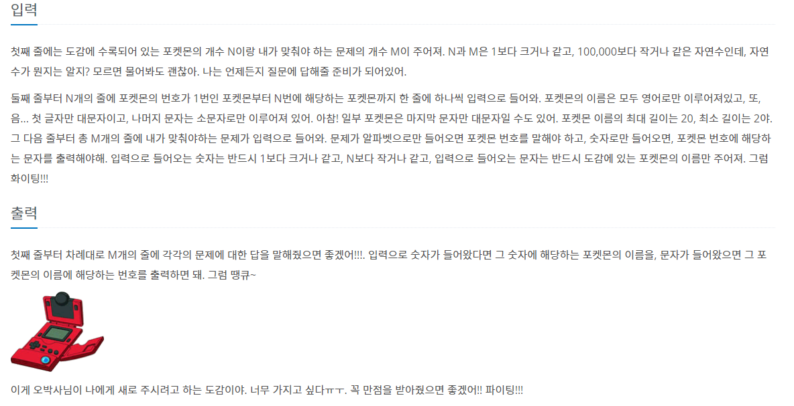
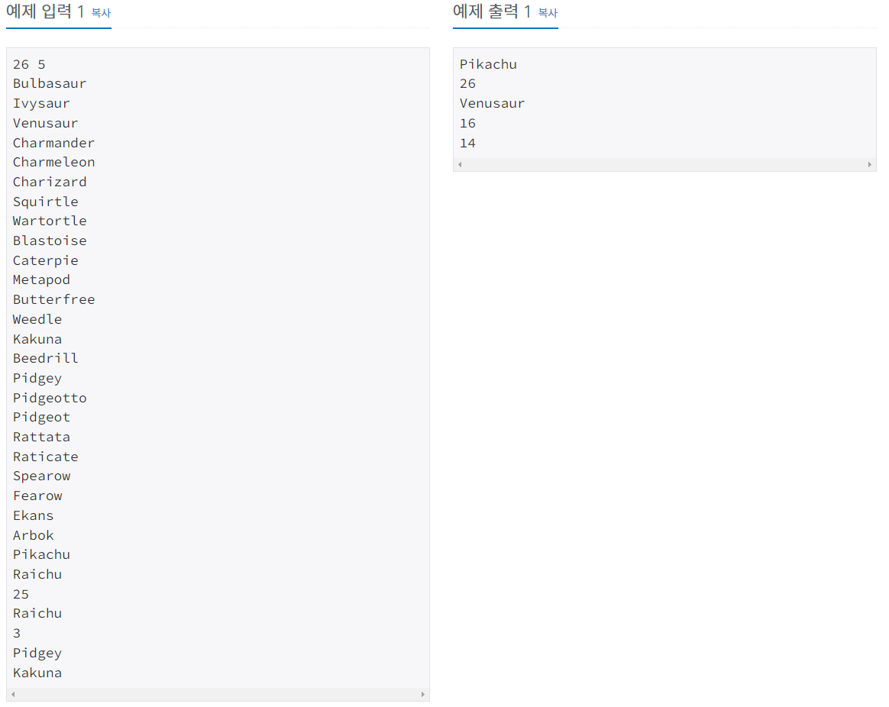
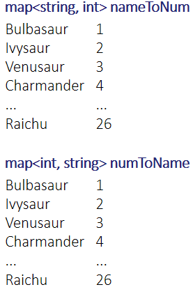

#INFO
난이도 : SILVER4
문제 유형 : Hash
출처 : https://www.acmicpc.net/problem/1620
1620번: 나는야 포켓몬 마스터 이다솜
첫째 줄에는 도감에 수록되어 있는 포켓몬의 개수 N이랑 내가 맞춰야 하는 문제의 개수 M이 주어져. N과 M은 1보다 크거나 같고, 100,000보다 작거나 같은 자연수인데, 자연수가 뭔지는 알지? 모르면
www.acmicpc.net
 
#SOLVE
문제 풀이에 앞서 BOJ 1620 문제는 입출력이 매우 빈번하게 일어나는 문제이기에, 풀이 전에 다음 코드를 앞에 명시해야 합니다.
아래 코드를 사용하지 않고, cin & cout 스트림을 사용하면 시간초과가 발생합니다.
ios_base :: sync_with_stdio(false);
cin.tie(NULL);
cout.tie(NULL);
문제풀이 아이디어는 간단합니다. Hash 자료구조를 사용할 것입니다.
포켓몬 문자열을 key로 포켓몬 번호 value에 접근할 map nameToNum과,
포켓몬 번호를 key로 포켓몬 문자열 value에 접근할 map numToName을 선언해 줍니다.

unordered_map<string, int> nameToNum;
unordered_map<int, string> numToName;
다음으로 m 횟수만큼 포켓몬 문자열, 포켓몬 번호 정보를 nameToNum과 numToName에 각각 pair<포켓몬 문자열, 포켓몬 번호> pair<포켓몬 번호, 포켓몬 문자열> 형태로 저장합니다.
int m, n;
cin >> m >> n;
string key = "";
int num = 0;
while(m--){
cin >> key;
num++;
nameToNum.insert(make_pair(key, num));
numToName.insert(make_pair(num, key));
}
이제 입력으로 포켓몬 번호가 들어오면 numToName에서 포켓몬 문자열을,
입력으로 포켓몬 문자열이 들어오면 nameToNum에서 포켓몬 번호를 출력해 주면 됩니다.
string input = "";
while(n--){
cin >> input;
// input이 포켓몬 문자열인 케이스 -> nameToNum 에서 몇 번째 포켓몬인지 출력
if((65 <= input[0] && input[0] <= 90)
|| (97 <= input[0] && input[0] <= 122)){
cout << nameToNum[input] << '\n';
}
// input이 포켓몬 번호인 케이스 -> numToName 에서 포켓몬 문자열 출력
else{
int val = stoi(input);
cout << numToName[val] << '\n';
}
}